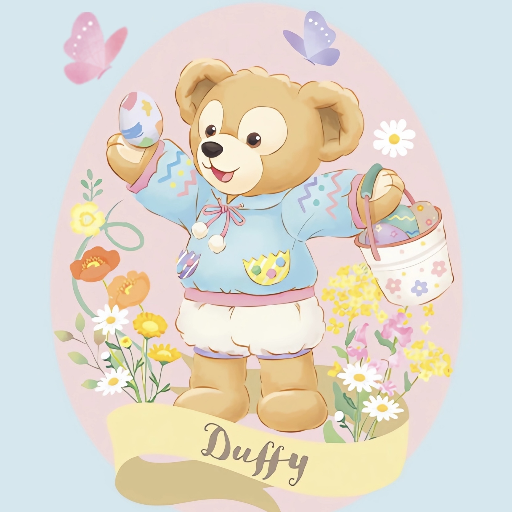
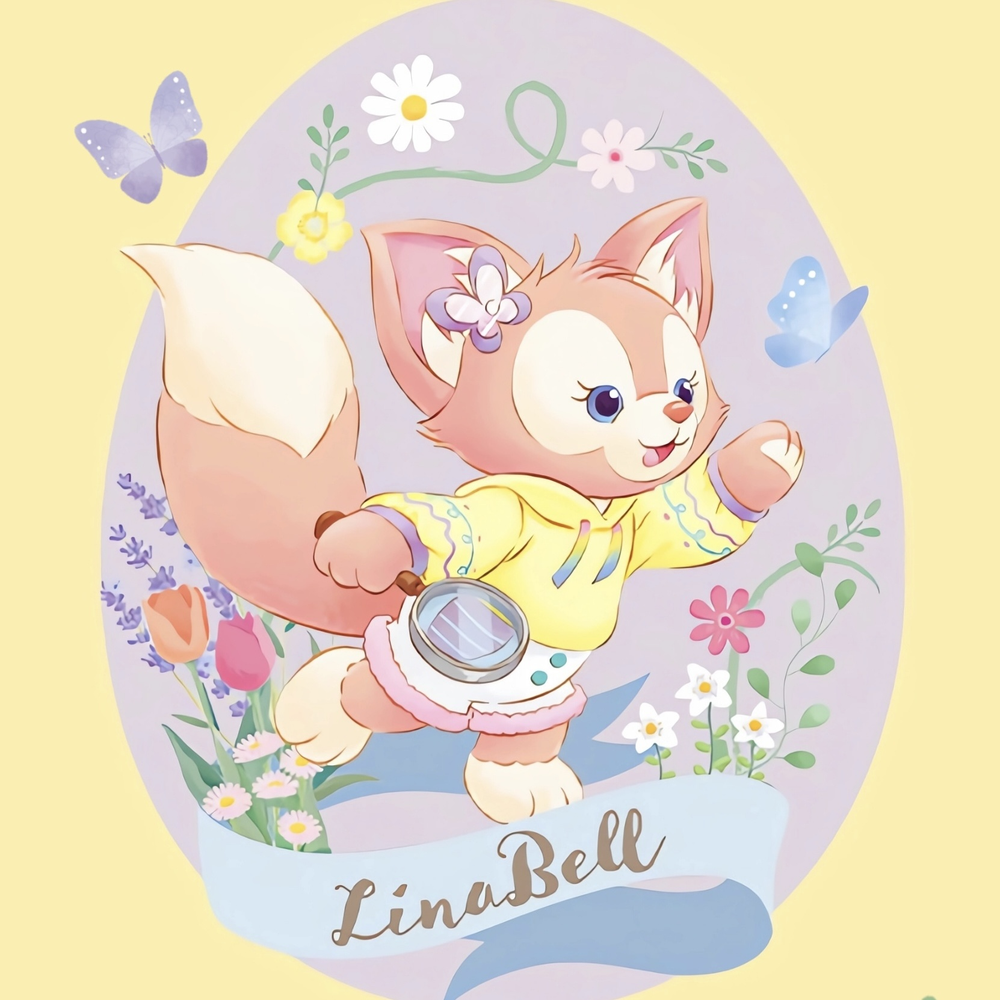
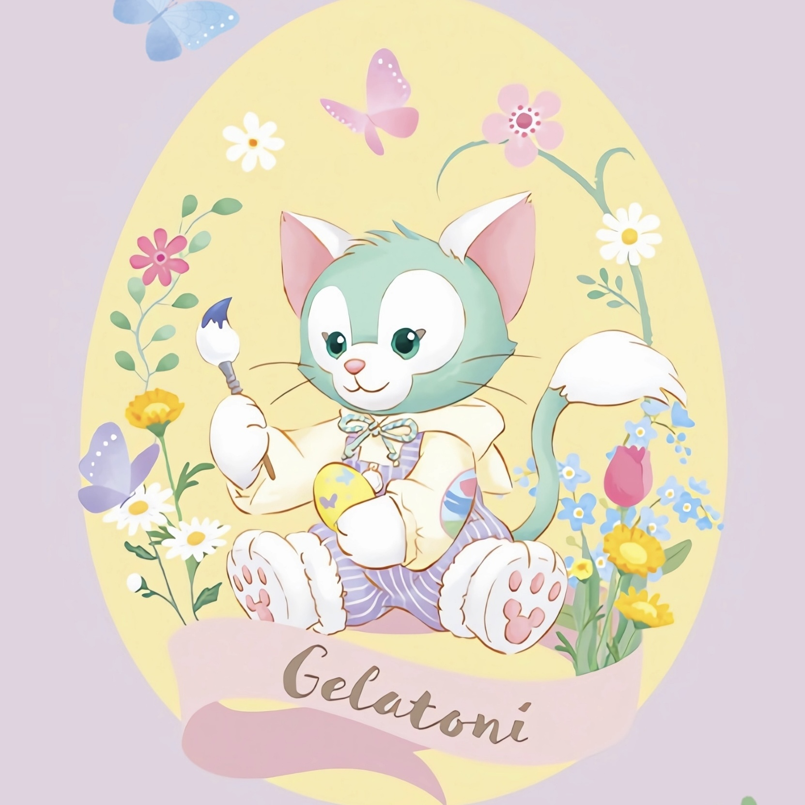
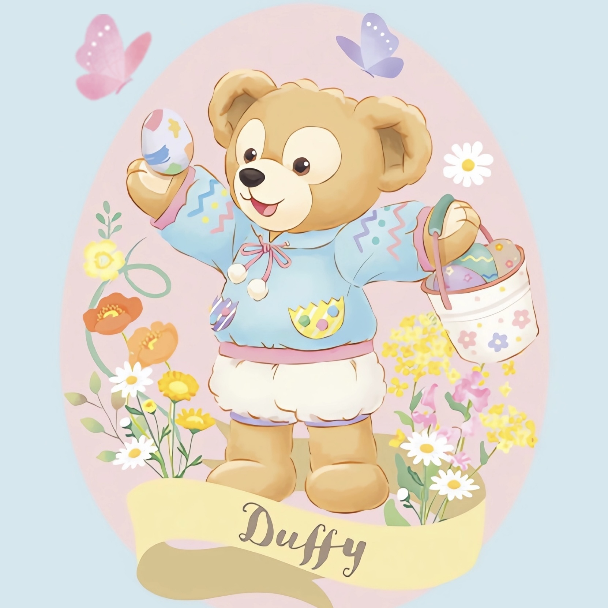
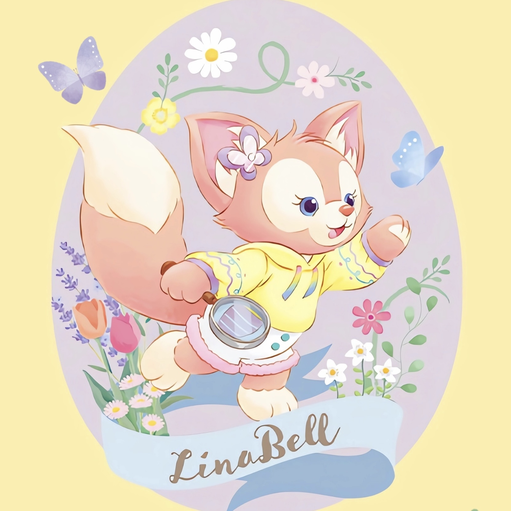
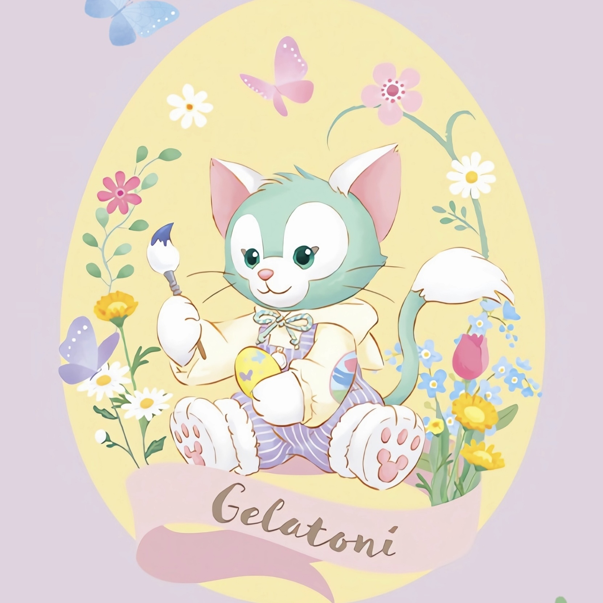

Why I chose this topic?
Hello,my name is Liu Lujie, and my student number is 23467649. I chose Duffy as my website topic mainly because Duffy has always been my favorite Disney character and one of Disney's popular IPs. He is very lively and cute, and his popularity and recognition make his an absolute must-have to attract a wide audience. The pictures on this website use Hover, JavaScript and other functions. Come and click to try it out!
Introduction of Duffy
Duffy Bear is a bear given to Mickey by Minnie. Minnie made a stuffed bear for Mickey who was about to go on a sea adventure. Minnie hoped that the bear would accompany Mickey so that Mickey would no longer be alone on the voyage.Mickey suggested calling this cute little bear Duffy (in Japanese, Duffy and backpack have similar pronunciations, trying to convey that Daffy and Mickey are inseparable). Since then, Duffy has been by Mickey's side, meeting many new friends along the way.


Duffy And Friends
Designed by Ethan Reed
Duffy:It's a cute little bear, a toy given to Mickey by Minnie.
ShellieMay: In order to keep Duffy from being alone, Minnie asked ShellieMay to stay with Duffy.
Gelatoni: He is a cat painter whom Duffy and ShellieMay met when they were traveling in Italy.
StellaLou: She is a purple rabbit dancer. She and Duffy met by chance and shared their dreams, so the two became good friends.
CookieAnn: He is a yellow puppy chef.
Olu Mel: He is a cute and lively little Pacific turtle.
LinaBell: She is a little pink fox explorer.
Duffy's Story
Designed by Ethan Reed
In order to ensure that Mickey would not be alone when he traveled around the world, Minnie personally sewed this little bear for Mickey before his voyage to accompany him on his journey. After that, Minnie sewed a cute pink bear for Duffy and named her "Shirley Rose". From then on, Duffy and Shirley Rose became good friends as childhood sweethearts.
Mickey and Duffy met Gerardoni in Italy when they were traveling around the world. When Duffy accidentally spilled the ice cream in his hand, Gerardoni cleverly dipped his tail into the ice cream that fell on the ground and made a picture. , made Duffy laugh out loud, and the two became good friends from then on. Under the influence of Geradoni, Duffy also quickly fell in love with painting. The two of them also gave each other their favorite works as gifts, and they had a deep affection for each other.
 




